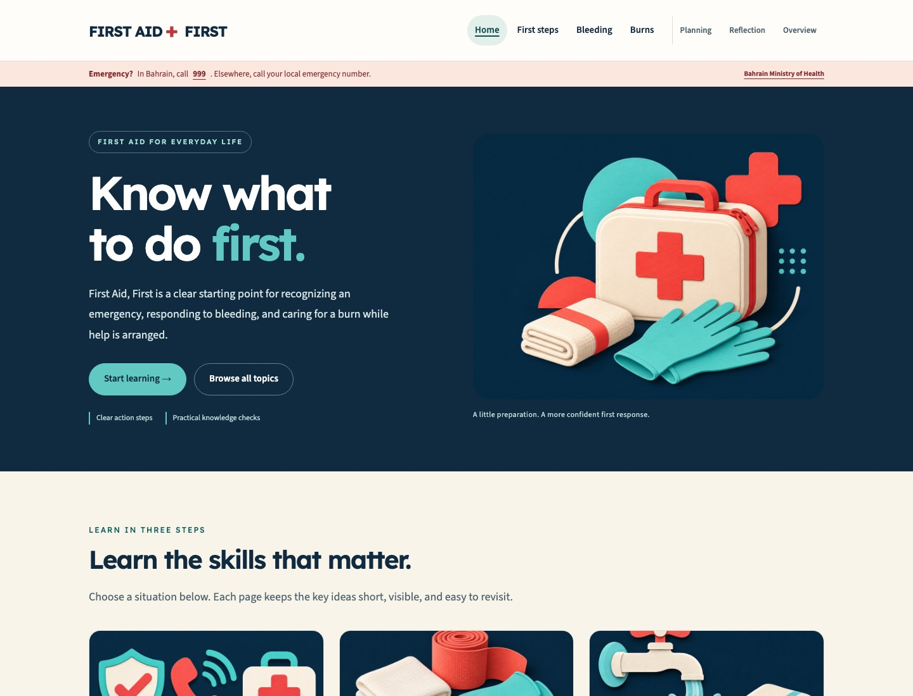
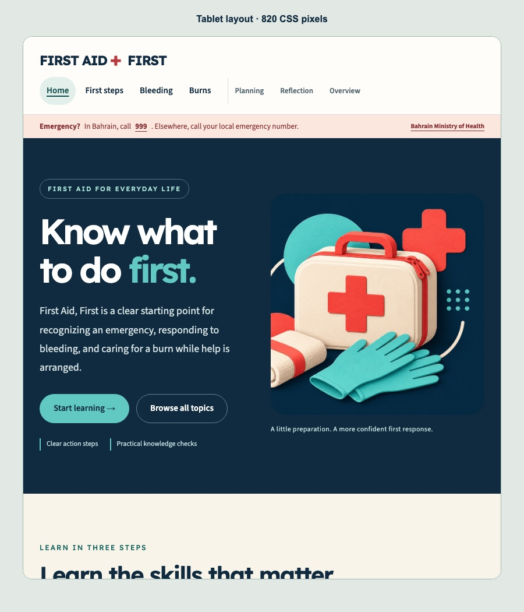
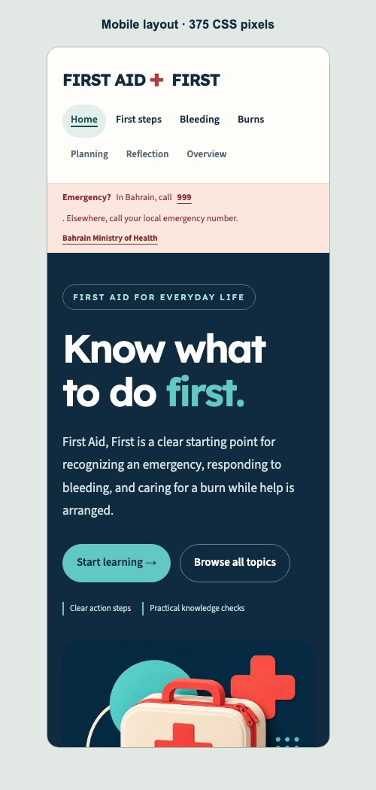

1. Project overview
| Item | Plan |
|---|---|
| Website title | First Aid, First |
| Category | Educational website |
| Problem statement | People may struggle to find a clear starting point when faced with a common first aid situation. |
| Target audience | Students and community members who want a basic introduction. |
| Objectives | Present three clear lessons, guide users between them, and demonstrate responsible first aid information sharing. |
2. Requirement analysis
Practical value and intended use
This site gives students, households, and community members a clear starting point before professional help arrives. The home directory links directly to common situations; the Bahrain emergency link supports a quick call; the checklists break actions into a readable order; and practice questions let learners check their understanding.
The website can be opened without installing software. Before wider public use, a qualified first aid educator should review the guidance, the group should test it with representative users, and an owner should schedule source checks. The registration form currently demonstrates validation; a real registration service would need secure data handling and a privacy notice.
| Functional | Non-functional |
|---|---|
| Seven linked pages; topic directory; situation selector; three-question learning check with feedback; first aid kit guide; expanded lesson FAQs; home registration form; first and last name minimum three characters; eight-digit mobile; valid email; success and error messages; lesson navigation. | Readable type and contrast; mobile-friendly layout; clear labels and feedback; simple fast-loading files; no server-side storage of personal data. |
3. Site map
All pages link to each other through the shared navigation.
4. User journey map
5. Low-fidelity wireframes
6. High-fidelity mockups
These are local screenshots of the completed website at three viewport widths. They provide visual evidence of the final layout, color scheme, navigation, and interface.
Desktop · 1440 pixels
The white navigation, two-column illustrated hero, typography, and first topic cards are shown in this capture of the implemented home page.

Tablet · 768 pixels
The navigation wraps to fit the available width; the hero keeps its two-column arrangement above the 760-pixel mobile breakpoint.

Phone · 375 pixels
The hero, topic cards, form fields, and learning sections use a single column. Page links remain available through wrapped navigation.

7. UI style guide
#102B3F
#61C9C2
#B8393E
#F8F4EA
Typography: Lexend for distinctive, readable headings; Source Sans 3 for body text. A Google Fonts stylesheet loads both, with Arial and sans-serif fallbacks. Buttons: dark coral (#B8393E) with white bold text. Cards: white with clear borders and spacious padding. Navigation: white with navy links and rounded active states. Forms: labeled fields and an on-page feedback message. Dark teal (#16645F) labels support readability on light backgrounds; aqua (#61C9C2) uses navy text. Decorative coral (#E94F4F) provides accents without carrying essential information alone.
The UI-UX-Pro-Max skill informed the visual hierarchy, readable layouts, control states, and responsive navigation. It was used as a design reference within the existing assistant workflow, not as a third AI service.
8. Responsive design plan
The desktop, tablet, and phone captures in section 6 demonstrate these layouts. The same shared stylesheet adapts all seven pages.
| Screen | Layout |
|---|---|
| Desktop | Two-column illustrated hero; three-card topic rows; limited reading width for long guides. |
| Tablet | Navigation adapts to available space; cards and guide sections keep clear spacing and readable text. |
| Mobile | Single-column hero, cards, form fields, and lesson content; wrapped navigation provides access to all seven pages. |
9. AI utilization plan and evidence
Planned outcomes: use the Codex assistant to translate the brief into a seven-page plan, draft understandable lesson content, assist with course-level code, and identify errors during review. Use ImageGen to create a consistent visual set without depicting medical procedures. Evaluate every output against the assignment, check medical wording against linked specialist sources, and adapt the interface for readability. A third AI tool must be used and documented with its real prompt, output, evaluation, and modifications before submission.
The assessment asks groups to use at least three AI tools. The Codex assistant and OpenAI ImageGen use are evidenced in this project folder. Group members must add a genuine record for one more AI tool they actually use before submission.
| AI tool | Purpose | Prompt used | Output generated | Evaluation / modifications |
|---|---|---|---|---|
| OpenAI Codex assistant | Planning, initial code, visual design, review | “Scan my course materials and do the project ... only use stuff in the course materials ... topic ... First aid basics ... theme and colors ... look wow.” | Seven-page structure, navy/coral/aqua style, HTML/CSS/JavaScript draft. | Matched the brief and taught topics; shortened medical guidance; cited Red Cross and NHS; kept the registration form browser-only. |
| OpenAI ImageGen | Four matching first aid illustrations | “Create a polished editorial illustration for a student first aid education website hero ... first aid kit ... navy, coral, aqua ... no words.” Follow-up prompts requested matching images for emergency response, bleeding supplies, and cooling a burn. | Hero and three lesson illustrations in the images/ folder. | Checked that it gives no medical instructions; converted to JPEG and placed on the home and lesson pages with descriptive alt text. |
| Other tool (complete only if used) | Pending actual group use | Record exact prompt | Record actual output | Record changes and evaluation |
10. Ethical and legal practice
Font credits: Lexend by the Lexend Project Authors and Source Sans 3 by Adobe, delivered through Google Fonts. Both use the SIL Open Font License 1.1: Lexend license and Source Sans 3 license. Arial is the fallback when web fonts cannot load.
Content was checked against the linked public guidance on 10 November 2026. The site is an educational introduction for students and community members. Age-specific procedures and professional assessment must be learned from the specialist sources and practical training.
Medical information is credited to the sources below and is presented as an introduction, with a reminder to contact emergency services. The four illustrations are AI-generated and credited above. Other visual motifs are CSS/text. The form does not transmit or store user data. AI assistance is disclosed above. Group members must review medical wording and add their names and authentic contribution records before submitting.